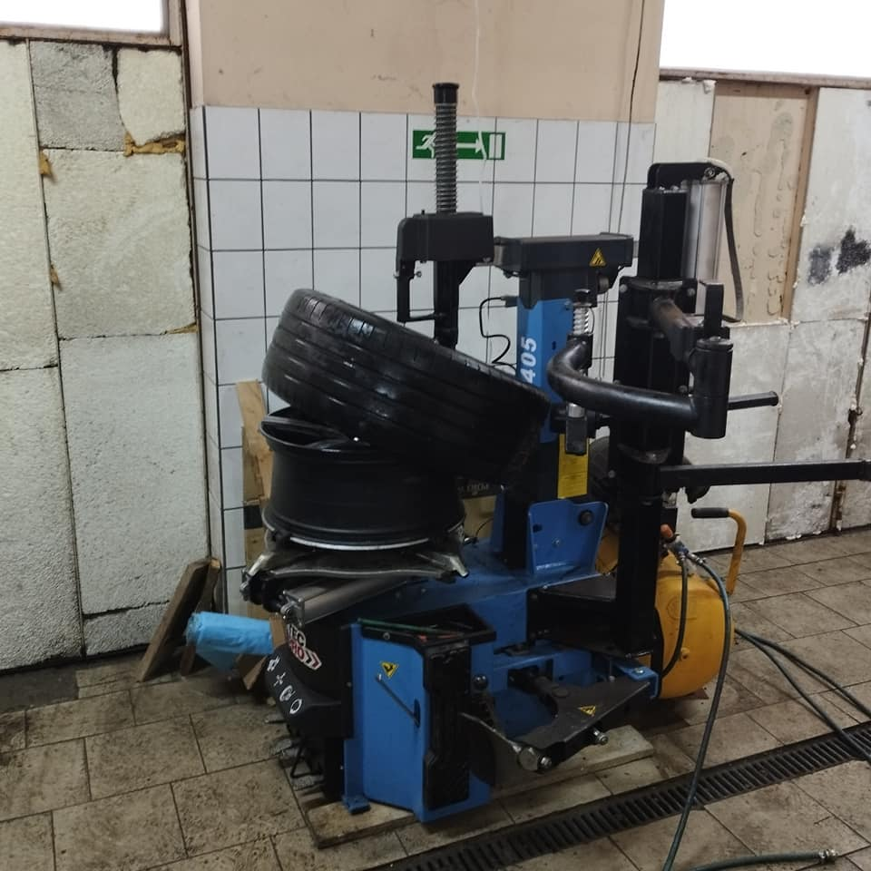

Galeria



Głównym profilem działalności firmy jest stacje obsługi i warsztaty samochodowe. Siedziba firmy znajduje się w miejscowości Sosnowiec w województwie śląskim. W celu uzyskania więcej informacji na temat oferty firmy napisz wiadomość e-mail na adres lehenkijvitalik@gmail.com Adres wykonywania działalności przez Vitalii Lehenkyi L&Vv Auto-Serwis to ul. Sienna 11, 41-200 Sosnowiec.
E-MAIL: lehenkijvitalik@gmail.com
NUMER TELEFONU: 886281207